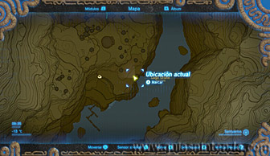

Puedes entrar en este santuario desde que llegas a la región de la torre de Hebra aunque su localización está un poco escondida. Debes ir al muelle que hay en el Lago Orune.
Allí verás el santuario tras una grieta en la pared. Sin embargo, no puedes llegar desde aquí hasta él.
Muy cerca de la grieta hay un gran montón de rocas agrietadas que puedes destruir con bombas y así liberar una corriente de aire ascendente. Úsala para elevarte a la parte alta de esta zona.
Avanza hacia el noreste por allí arriba para encontrar una cueva en la pared (verás unas antorchas iluminando la entrada). Mira la siguiente foto para localizar el sitio exacto.

Avanza por el interior de la cueva; primero lánzate por donde sube una corriente de aire y después atraviesa una zona de agua.
Al final del recorrido llegarás a la entrada del santuario.
Lo primero que verás en una puerta cerrada frente a ti, si enciendes la antorcha que hay a la izquierda (tienes otra a la derecha) se abrirá. Después tendrás que caminar por encima de un gran cilindro rodeado de pinchos. Solo debes fijarte en que haya un camino libre y camina con cuidado.
Al atravesarlo encuentras un interruptor y a, al pisarlo, te encuentras cara a cara con 4 miniguardianes. Acaba con ellos con flechas y después usa un bloque de hielo para alcanzar el cofre que se ve arriba a la derecha. Contiene unas flechas bomba.
Después crea otro bloque de hielo para alcanzar la cima de la columna de la izquierda, allí hay un interruptor que puedes pisar para abrir el camino.
Al pisar el interruptor que ha quedado a la vista se activará un mecanismo que hará caer una gran bola de pinchos y abrirá el camino que se ve tapado por cajas. Puedes esquivarla o correr hacia atrás para evitar que te dañe (incluso puedes pararla con el imán si eres rápido).
A continuación, sube la rampa y al llegar arriba mira atrás. Verás unos bloques agrietados que peudes destruir con tus bombas, dejando a la vista un cofre que puedes coger con el imán y así conseguir un diamante.

Después sigue el camino y encontrarás una zona de lava, tras ella verás un cofre elevado y enfrente de él un interruptor en el suelo que abre una puerta. Ese es el camino que te llevará al altar, pero al abrirse también activa una trampa que hace caer bolas con pinchos desde el techo. Corre para esquivarla.
Puedes coger el cofre que está sobre la columna usando el imán y podrás coger un núcleo ancestral de su interior.
La bola de pinchos que cae lo hará en la lava y, al destruirse, volverá a caer otra, así que debes coger la bola con pinchos usando el imán y depositarla en el suelo sin que se destruya.

Así podrás subir la rampa sin que te caiga otra bola y llegarás al altar del santuario. Al examinarlo obtendrás un símbolo de valía.